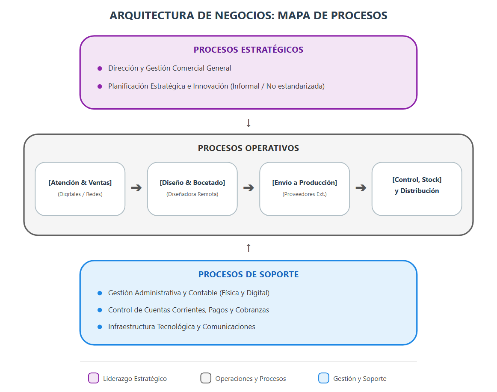

Arquitectura de negocios
Mapa de procesos de la organización

Listado de procesos
Identificación y breve descripción de cada proceso expuesto en el mapa.
Consecuente con el mapa de procesos, se desprende el siguiente listado:
- Atención de Consultas y Captación de Clientes: Recepción de consultas por redes sociales (Instagram, landing page) y atención vía WhatsApp. Envío de respuestas iniciales (catálogo/bot de bienvenida) y búsqueda activa/prospección presencial de nuevos clientes.
- Gestión de Ventas y Asesoramiento Comercial: Asesoramiento sobre tipos de avíos, cotización, seguimiento de clientes potenciales e ingreso del pedido formal.
- Diseño y Bocetado del Avío: Coordinación con la diseñadora gráfica (remota) para la confección del boceto digital según las especificaciones del cliente y posterior envío para su aprobación.
- Confirmación de Pedido y Coordinación de Producción: Envío del pedido aprobado por correo electrónico a administración/fábrica externa y comunicación de los plazos de entrega estimados según cola de producción del proveedor.
- Recepción, Control de Calidad y Stock: Control de la mercadería enviada por los proveedores externos en la oficina/depósito, verificando cantidades y especificaciones contra el pedido original.
- Empaque y Entrega (Distribución): Organización de despachos y logística de entregas finales al cliente (o retiro por oficina/depósito).
- Gestión Administrativa, Facturación y Cobranzas: Registro en papel y planillas de cada pedido, control de cuentas corrientes de clientes, pagos a proveedores y gestión contable de la empresa.
Arquitectura de datos
Relevar la arquitectura de los datos de la organización, identificando su distribución (centralizada, distribuida, mixta) y las entidades principales del negocio que aloja.
Tabla Resumen de arquitectura de datos
Base de Datos | Tipo y Tecnología | Entidades principales | Seguridad y acceso | Nombre del almacén | OLAP/OLTP, otros | Datos que aloja | Medidas de seguridad |
|---|---|---|---|---|---|---|---|
DB transaccional - Registros Comerciales y Ventas | Excel/a mano | Clientes, Teléfonos, Pedidos, Registros de seguimiento | Acceso por cuenta de Google personal (Vendedores/Comerciales) | Drive Comercial | N/A | Marcas, teléfonos de contacto, estados de pedidos | Control de acceso por cuenta de correo Google; sin política formal de backups |
Repositorio de Diseños | Repositorio de Archivos en la Nube (Google Drive) | Clientes, Diseños/Bocetos, Especificaciones técnicas | Acceso compartido por Vendedores y Diseñadora | Google Drive Compartido (Carpetas por cliente) | Archivos de diseño, medidas, fechas, proveedores asignados | Carpetas organizadas por cliente. Sin backups automatizados adicionales. | |
Control de Stock | Planilla de Cálculo (Google Sheets) | Artículos, Cantidades, Stock disponible | Acceso Vendedores y Personal de Depósito | Drive Depósito | Existencias físicas de artículos e insumos | Control de permisos básico de Google Drive. | |
Registros Administrativos y Contables | Físico / Papel (Carpetas / Biblioratos) | Clientes, Proveedores, Facturas, Pagos, Cuentas Corrientes | Acceso exclusivo presencial de Administración (SOCIOS/ADMIN) | Archivero Físico de Oficina | Fichas de cliente, comprobantes de pago, historial de compras, notas de pedidos | Resguardo bajo llave en oficina física; no posee respaldo/backup digital. | |
Muestrario Físico de Producción | Registro Físico (Carpetas físicas con muestra) | Muestras físicas, Clientes, Fechas, Proveedores | Acceso personal de oficina | Muestrario Físico | Muestras físicas de avíos producidos con ficha asociada | Resguardo en la oficina comercial. |
Arquitectura de aplicaciones
Relevar el catálogo de aplicaciones actual, identificar iniciativas en ejecución e informar el cubrimiento de estas aplicaciones en los procesos de negocio.
Tabla resumen de arquitectura de aplicaciones
Aplicaciones ➡ <br/> Procesos ⬇ | WhatsApp / WhatsApp Business | Google Workspace (Drive / Gmail) | Canva / Software de Diseño | Plataforma CRM (Ej. Trengo / Bot) | Registro Físico / Papel |
|---|---|---|---|---|---|
Atención de Consultas y Captación | ✔ | ✔ | |||
Gestión de Ventas y Asesoramiento | ✔ | ✔ | ✔ | ||
Diseño y Bocetado | ✔ | ✔ | |||
Confirmación de Pedido y Envió a Producción | ✔ | ✔ | |||
Recepción, Control de Calidad y Stock | ✔ | ✔ | |||
Empaque y Entrega (Distribución) | ✔ | ✔ | |||
Gestión Administrativa, Facturación y Cobranzas | ✔ | ✔ |
Arquitectura tecnológica
Relevar la estructura que posee la compañía con respecto al software y hardware, incluyendo la infraestructura de telecomunicaciones y soporte.
La entidad tiene pocas computadoras de índole personal, y éstas se vinculan a la entidad bajo la modalidad de BYOD.
Tabla resumen de arquitectura tecnológica
Hardware/Servicio | Sistema Operativo | Middleware/Aplicación | Notas |
|---|---|---|---|
Laptops / Notebooks de Trabajo | Windows 10 (sin confirmar) | Navegador Web (Chrome), Google Drive, Canva, WhatsApp Web | Modalidad Bring Your Own Device (BYOD). Computadoras personales de los vendedores y personal administrativo. |
Smartphones / Dispositivos Móviles | Android / iOS (sin confirmar) | WhatsApp Business, Instagram App | Dispositivos móviles personales/comerciales utilizados para atención directa a clientes y gestión de redes. |
Servidores Locales / Nube | N/A (Inexistente) | N/A | La empresa no posee servidores propios. Todo el almacenamiento digital opera sobre infraestructura en la nube pública de Google Workspace. |
Redes | Proveedor | Seguridad y monitoreo | Notas |
|---|---|---|---|
Principal (Oficina / Depósito) | ISP Hogareño / Residencial (A confirmar proveedor exacto) | Router predeterminado del proveedor, sin firewall dedicado ni monitoreo | Conexión Wi-Fi y cableada comercial/hogareña estándar. No cuenta con contrato corporativo SLA. |
Invitados / Acceso Comercial | ISP Hogareño / Residencial (A confirmar proveedor exacto) | No posee segmentación de red | Red Wi-Fi compartida sin aislamiento de tráfico corporativo. |